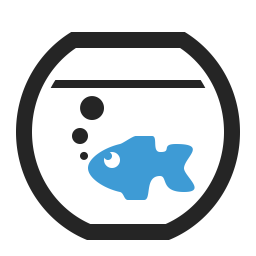
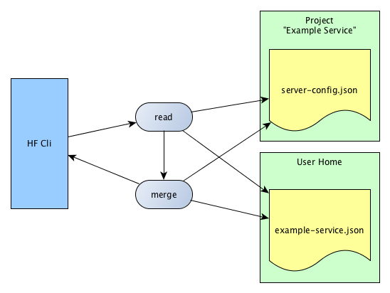

under construction yet!

The configure settings are in the file server-config.json. This file is in the project root directory and has format JSON.
Similarly, there may be a JSON file in your home directory that overwrites the project configuration. The name of the file in your home directory is the project name. All characters are lowercase and the spaces are replaced by '-'.
Example Service and it is under the directory /home/berti/projects/example-service.server-config.json.example-service.json.
The user configs is always override the project configs.
| Settings | Type | Required | Description |
|---|---|---|---|
name |
String | yes | The application name. |
version |
String | yes | A version |
server.home |
String | yes | The path to the Application Server |
maven.home |
String | yes (1) | The path to the Maven installation |
maven.setting |
String | yes (1) | The Maven settings.xml file |
maven.project |
String | yes (1) | The pom.xmlof the Project. |
ant.home |
String | yes (2) | The path to the Ant installation. |
domain.name |
String | yes | The domain name in the Application Server. |
domain.home |
String | yes | The path to the domain directory. |
domain.deploy |
Map | yes | A map with the deployment files. |
domain.ports.base |
Number | yes | The base port of the application (Admin Console Port is + 48, The application is on + 80). |
domain.jdbc |
Map | yes | A map with the jdbc names and their settings. |
command.timeout |
Number | yes | The timeout in milliseconds. If the value is 0, then it is running infinity. |
command.asadmin |
Object | yes | The asAdmin command. There can be different commands for different platforms |
command.maven |
Object | yes | The mvn command. There can be different commands for different platforms |
command.ant |
Object | yes | The ant command. There can be different commands for different platforms |
settings |
Object | yes | All keys / values under this property can be referenced in the configuration. |
env |
Object | yes | A key value map for the environment variables that is setting for the Application Server. |
{
"name": "test-project",
"version": "0.1.0-SNAPSHOT",
"server": {
"home": "{user.home}/programs/payara-4.1.1.154"
},
"maven": {
"home": "{user.home}/programs/maven-3.3.4",
"setting": "{project.home}/setting.xml",
"project": "{project.home}/projects/pom.xml"
},
"ant": {
"home": "{user.home}/programs/ant-1.10.0"
},
"domain": {
"name": "test-project",
"home": "{project.home}/domains",
"deploy": {
"rest-provider": "{project.home}/projects/rest-provider/target/rest-provider-0.1.0-SNAPSHOT.war",
"business-beans": "{project.home}/projects/business-beans/target/business-beans-0.1.0-SNAPSHOT.jar"
},
"ports": {
"base": 50000
},
"jdbc": {
"testDB": {
"dataSourceClassName": "com.mysql.jdbc.jdbc2.optional.MysqlDataSource",
"restype": "javax.sql.DataSource",
"properties": {
"user": "{database.user}",
"password": "{database.password}",
"url": "jdbc:mysql://localhost:{database.port}/test"
},
"description": "This is the Test Database"
}
}
},
"command": {
"timeout": 120000,
"asadmin": {
"win32": "{server.home}/bin/asadmin.bat",
"unix": "{server.home}/bin/asadmin"
},
"maven": {
"win32": "{maven.home}/bin/mvn.cmd",
"unix": "{maven.home}/bin/mvn"
},
"ant": {
"win32": "{ant.home}/bin/ant.bat",
"unix": "{ant.home}/bin/ant"
}
},
"settings": {
"database": {
"user": "db user",
"password": "secret password",
"port": 3306
},
"email-password": "email secrets"
},
"env": {
"project.home": "{project.home}",
"user.home": "{user.home}",
"project.name": "{project.name}",
"project.version": "{project.version}"
}
}